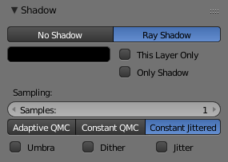

Introduction¶
The Area lamp simulates light originating from a surface (or surface-like) emitter. For example, a TV screen, office neon lamps, a window, or a cloudy sky are just a few types of area lamp. The area lamp produces shadows with soft borders by sampling a lamp along a grid the size of which is defined by the user. This is in direct contrast to point-like artificial lights which produce sharp borders.
Common options.
Lamp Options¶
- Distance, Energy and Color
These settings are common to most types of lamps, and are described in Light Properties.
Note that the Distance setting is much more sensitive and important for Area lamps than for others; usually any objects within the range of Distance will be blown out and overexposed. For best results, set the Distance to just below the distance to the object that you want to illuminate.
- Gamma
Amount to gamma correct the brightness of illumination. Higher values give more contrast and shorter falloff.
The Area lamp does not have light falloff settings. It uses an "inverse quadratic" attenuation law. The only way to control its falloff is to use the Distance and/or Gamma settings.
- This Layer Only, Negative, Specular and Diffuse
- These settings control what the lamp affects, as described in What Light Affects.
Shadows¶
Area light ray-traced shadows are described here: Ray-traced Shadows.
When an Area light source is selected, the Shadow panel has the following default layout:

Adaptive QMC settings. |

Constant Jittered settings. |
Area Shape¶
The shape of the area light can be set to Square or Rectangle.

Square options. |
Rectangle options. |
- Square / Rectangular
- Emit light from either a square or a rectangular area.
- Size / Size X / Size Y
- Dimensions for the Square or Rectangle.
Ghi chú
Shape Tips
Choosing the appropriate shape for your Area light will enhance the believability of your scene. For example, you may have an indoor scene and would like to simulate light entering through a window. You could place a Rectangular area lamp in a window (vertical) or from neons (horizontal) with proper ratio for Size X and Size Y. For the simulation of the light emitted by a TV screen, a vertical Square area lamp would be better in most cases.